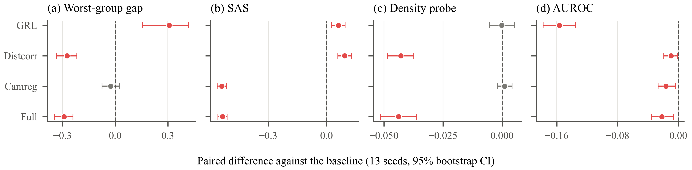
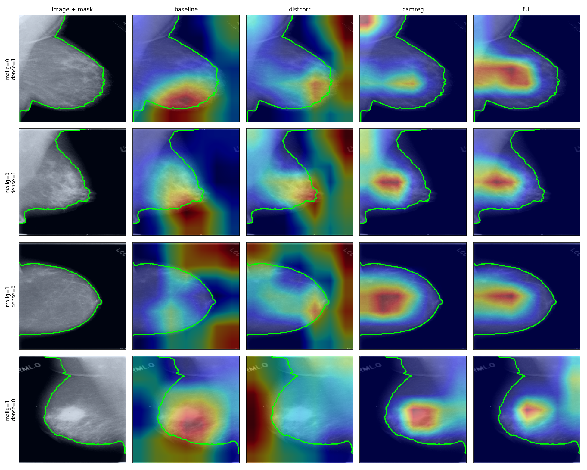

Results
Main comparison
All five methods on CBIS-DDSM, repeated over 13 seeds.
Scores by method#
Average ± SD over 13 runs. Each run has about 478 test cases that fit the shortcut (AUROC_a) and 581 that break it (AUROC_c). Var is how much AUROC_c changes from run to run. The probe column is plain accuracy; always guessing "dense" already scores 0.848.
| Method | AUROC | AUROC_a | AUROC_c | Var(AUROC_c) | Gap | SAS | Probe |
|---|---|---|---|---|---|---|---|
| Baseline | 0.705 ± 0.018 | 0.902 ± 0.024 | 0.544 ± 0.066 | 0.0043 | 0.357 ± 0.087 | 0.557 ± 0.046 | 0.905 ± 0.012 |
| GRL | 0.549 ± 0.042 | 0.883 ± 0.125 | 0.219 ± 0.088 | 0.0077 | 0.664 ± 0.203 | 0.619 ± 0.049 | 0.905 ± 0.010 |
| Distance correlation | 0.696 ± 0.023 | 0.764 ± 0.053 | 0.681 ± 0.058 | 0.0034 | 0.083 ± 0.090 | 0.650 ± 0.053 | 0.862 ± 0.014 |
| CAM regularization | 0.689 ± 0.027 | 0.887 ± 0.025 | 0.555 ± 0.053 | 0.0028 | 0.331 ± 0.066 | 0.018 ± 0.004 | 0.906 ± 0.012 |
| Both fixes | 0.684 ± 0.023 | 0.744 ± 0.051 | 0.679 ± 0.051 | 0.0026 | 0.065 ± 0.078 | 0.021 ± 0.003 | 0.861 ± 0.014 |
Change compared with the baseline#
Each method minus the baseline, run by run (13 runs), with a 95% bootstrap interval and a Wilcoxon p-value. Rows in bold are the main measure, the group gap.
| Method | Measure | Average change | 95% interval | p |
|---|---|---|---|---|
| GRL | Gap | +0.307 | [+0.156, +0.418] | 0.013 |
| GRL | AUROC | −0.157 | [−0.178, −0.135] | 0.0002 |
| Distance correlation | Gap | −0.275 | [−0.335, −0.219] | 0.0002 |
| Distance correlation | Probe | −0.043 | [−0.049, −0.037] | 0.0002 |
| Distance correlation | SAS | +0.093 | [+0.058, +0.128] | 0.0005 |
| Distance correlation | AUROC | −0.010 | [−0.019, −0.001] | 0.147 |
| CAM regularization | SAS | −0.540 | [−0.563, −0.516] | 0.0002 |
| CAM regularization | Gap | −0.026 | [−0.075, +0.022] | 0.376 |
| CAM regularization | AUROC | −0.016 | [−0.027, −0.004] | 0.022 |
| Both fixes | Gap | −0.292 | [−0.348, −0.242] | 0.0002 |
| Both fixes | SAS | −0.536 | [−0.560, −0.512] | 0.0002 |
| Both fixes | Probe | −0.044 | [−0.052, −0.036] | 0.0002 |
| Both fixes | AUROC | −0.022 | [−0.035, −0.006] | 0.022 |

docs/assets/figures/forest_plot_main.png (made by analysis/paper_figures.py)What this shows#
Default GRL backfires. AUROC falls by about 16 points and the gap almost doubles. Results also swing widely: the gap grew in 12 of 13 runs (by up to 0.606) and shrank in one (by 0.468), and in that run the aligned-group AUROC itself dropped to 0.494. The GRL settings study shows this is caused by these particular settings.
Distance correlation fixes only the features. The gap and the density probe both fall a lot, for about one AUROC point (−0.010, p = 0.147). The heat maps do not move back into the breast; SAS goes up slightly (+0.093). The probe drop is bigger than its accuracy suggests: balanced accuracy goes from 0.791 to 0.557, and probe AUROC from 0.903 to 0.789.
CAM regularization fixes only the heat maps. SAS falls more than tenfold, but the gap (−0.026, p = 0.376) and the probe do not change meaningfully. So the two problems really are separate.
Both fixes together keep both benefits, without making either problem worse, for a small AUROC cost (−0.022, p = 0.022).
Where the smaller gap comes from
Distance correlation and both fixes raise AUROC on the group that breaks the shortcut by about 0.14, and lower it on the group that fits it by 0.14–0.16, in all 13 runs. So some of the improvement is traded away on the easier group. The harder group has only about 60 cancers per run, so its score varies a lot between runs (variance 0.0026–0.0077). That is why every comparison is made run by run.
Heat-map examples#

docs/assets/figures/dccam_qualitative_gradcam.png (made by experiments/main_cbis_ddsm.py)For the baseline and for distance correlation, the heat maps reach outside the breast. In the malignant, non-dense case, both focus on a bright artifact near the image edge instead of the tumour. With CAM regularization and with both fixes, the heat maps stay inside the breast in every case.